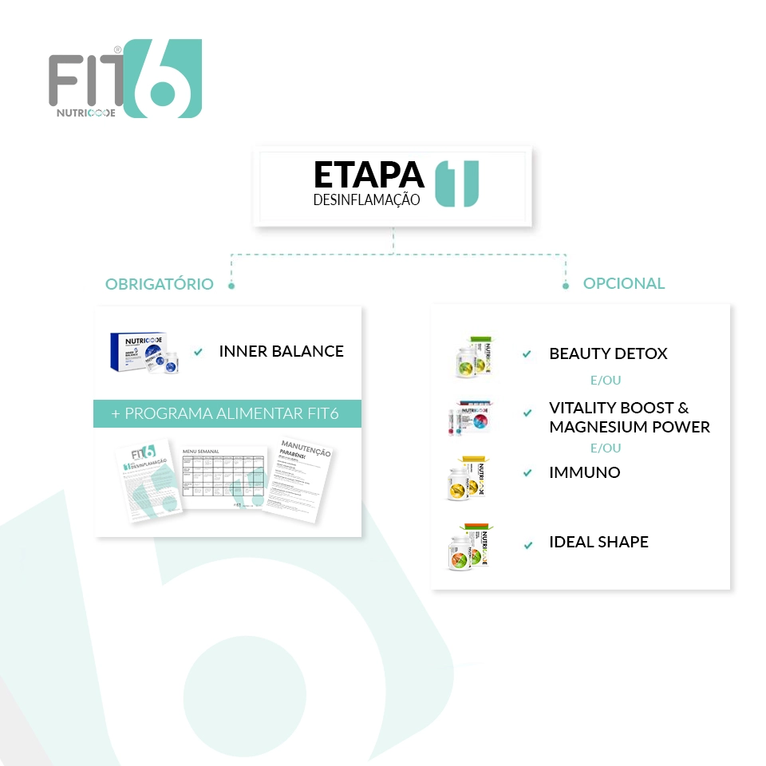

Etapa 1
Desinflamação
Há uma redução da ingestão de açúcar e farinha refinados e de alimentos processados no geral.
A sensação é de desinchar, de bem estar, de leveza.
Em certos casos, pela diminuição
da ingestão de açúcar, pode ocorrer dor de cabeça e sensação de fraqueza. É normal nos primeiros dias, após iniciar o programa.
Posteriormente, o organismo adapta-se e os sintomas aliviam.
Porque motivo se chama desinflamação?
Porque na realidade, há uma redução do consumo de alimentos pró inflamatórios e há um aumento do consumo de alimentos com ação anti inflamatória.
O que se pretende?
Que ocorra perda de volume, perda de peso, sensação de bem estar.
O uso deste termo, tem também a ver com o facto de se verificar que, indivíduos obesos apresentam marcadores inflamatórios aumentados. Acredita-se que tenha a ver com a percentagem de massa gorda.
Este estado inflamatório, cria as condições ideais para o desenvolvimento de outros problemas e saúde, doenças associadas à obesidade.
Por outro lado, o estado inflamatório, diminui a capacidade de perda de peso e de volume.
Ao atuar diretamente na raiz do problema, obtemos perda de peso e redução da massa gorda mais rapidamente e sem recorrer ao uso de alimentos altamente processados.
